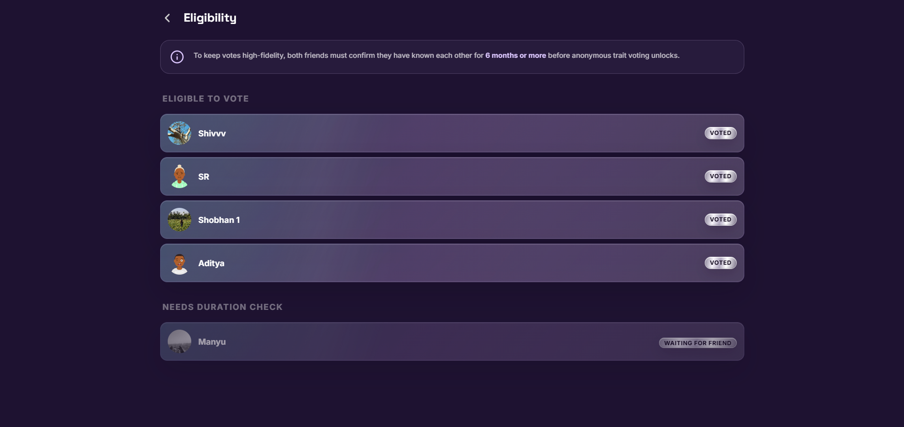

VibeBatch
A social personality web application where friends anonymously vote on each other's traits, build public-facing vibe profiles, and unlock premium visual identity cards.
Open project details
- Architected relational PostgreSQL schemas for user profiles, friend relationships, trait voting, messages, story cards, and premium flows.
- Engineered data privacy patterns using Supabase Row Level Security for user-owned profile, relationship, message, and trait data.
- Implemented secure authentication, premium visual identity cards, invite/share flows, and product workflows with React/Vite, Supabase Auth, and database services.
- Designed premium story cards with 15 randomized backgrounds selected through color-theory logic connected to each user's trait profile.
- Integrated a Gemini-based help chatbot for small issues, how-to questions, and confusion points, backed by a dedicated support mail flow.
Gallery 14 UI screens
VibeBatch screenshots are wired in. Add the image files to the matching asset paths to display them.